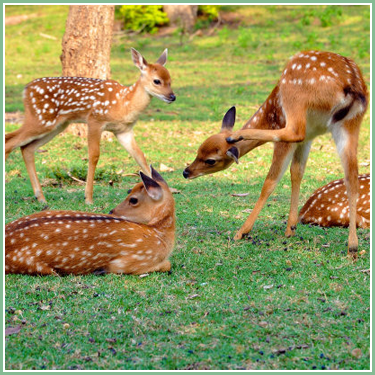
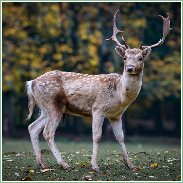
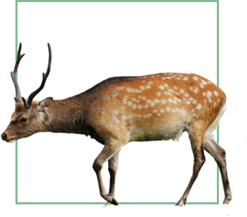

● 梅花鹿 ●

梅花鹿（学名：Cervus nippon）是一种中型鹿，体长140-170厘米，肩高85-100厘米，成年体重100-150千克，雌鹿较小,雄鹿有角，一般四叉。背中央有暗褐色背线。尾短，背面黑色，腹面白色。夏毛棕黄色，遍布鲜明的白色梅花斑点，臀斑白色，故称“梅花鹿”。
梅花鹿生活于森林边缘或山地草原地区。季节不同，栖息地也有所改变。雄鹿平时独居，发情交配时归群。晨昏活动，以青草树叶为食，好舔食盐碱。每胎1仔，幼仔身上有白色斑点。主要分布于中国，日本和俄罗斯。

形态特征
梅花鹿属中型鹿类，头部略圆，颜面部较长，鼻端裸露，眼大而圆，眶下腺呈裂缝状，泪窝明显，耳长且直立，颈部长，四肢细长，主蹄狭而尖，侧蹄小，尾较短。
雌兽无角，雄兽的头上具有一对雄伟的实角，角上共有4个杈，眉杈和主干成一个钝角，在近基部向前伸出，次杈和眉杈距离较大，位置较高，常被误以为没有次杈，主干在其末端再次分成两个小枝。主干一般向两侧弯曲，略呈半弧形，眉叉向前上方横抱，角尖稍向内弯曲，非常锐利[1]。每年4月，雄鹿的老鹿角就会脱落，新鹿角就会开始生长。新生的鹿角表面，由一层棕黄色的天鹅绒状的皮包裹着，皮里密布着血管。进入9月时，鹿角开始逐渐骨化，表皮彻底脱落，硬而光滑的鹿角完全露出。

栖息环境
梅花鹿生活于针阔混交林的山地、森林边缘和山地草原地区，不在茂密的森林或灌丛中，这样有利于快速奔跑。白天和夜间的栖息地有着明显的差异，白天多选择在向阳的山坡，茅草丛较为深密，并与其体色基本相似的地方栖息；夜间则栖息于山坡的中部或中上部，坡向不定，但仍以向阳的山坡为多，栖息的地方茅草则相对低矮稀少，这样可以较早地发现敌害，以便迅速逃离。